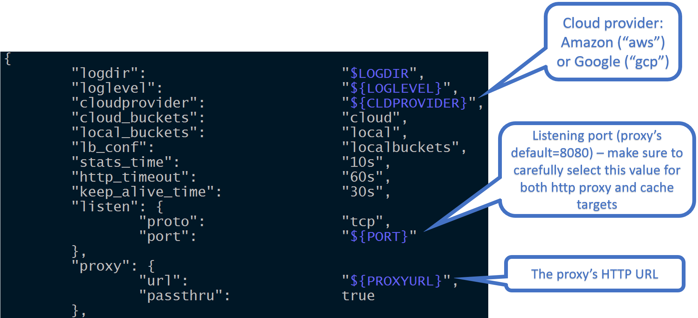
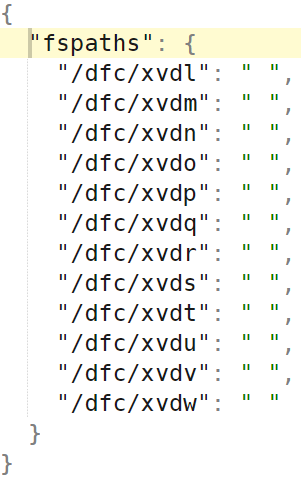

CONFIGURATION
Table of Contents
- Runtime configuration
- Configuration persistence
- Startup override
- Managing filesystems
- Disabling extended attributes
- Enabling HTTPS
- Filesystem Health Checker
- Networking
- Reverse proxy
- Curl examples
- CLI examples
AIS configuration is consolidated in a single JSON template where the configuration sections and the knobs within those sections must be self-explanatory, and the majority of those, except maybe just a few, have pre-assigned default values. The configuration template serves as a single source for all deployment-specific configurations, examples of which can be found under /deploy.
AIS production deployment, in particular, requires careful consideration of at least some of the configurable aspects. For example, AIS supports 3 (three) logical networks and will, therefore, benefit, performance-wise, if provisioned with up to 3 isolated physical networks or VLANs. The logical networks are: user (aka public), intra-cluster control, and intra-cluster data - the corresponding JSON names are, respectively: ipv4, ipv4_intra_control, and ipv4_intra_data.
The following picture illustrates one section of the configuration template that, in part, includes listening port:

Further, test_fspaths section (see below) corresponds to a single local filesystem being partitioned between both local and Cloud buckets. In other words, the test_fspaths configuration option is intended strictly for development.

In production we use an alternative configuration called fspaths: the section of the config that includes a number of local directories, whereby each directory is based on a different local filesystem.
Terminology: mountpath is a triplet (local filesystem (LFS), disks that this LFS utilizes, LFS directory). The following rules are enforced: 1) different mountpaths use different LFSes, and 2) different LFSes use different disks.
The terms
fspath(akafilesystem path) andmountpathare used interchangeably throughout AIStore docs and sources. Whenfspathconfiguration is enabled, the 1-to-1 relationship between configuredmountpathsand local filesystems is enforced and validated at all times.
An example of 12 fspaths (and 12 local filesystems) follows below:

Runtime configuration
First, some basic facts:
- AIS cluster is a collection of nodes - members of the cluster.
- A node can be an AIS proxy (aka gateway) or an AIS target.
- In either case, HTTP request to read (get) or write (set) specific node’s configuration will have
/v1/daemonin its URL path. - The capability to carry out cluster-wide configuration updates is also supported. The corresponding HTTP URL will have
/v1/clusterin its path.
Both
daemonandclusterare the two RESTful resource abstractions supported by the API. Please see AIS API for naming conventions, RESTful resources, as well as API reference and details.
- To get the node’s up-to-date configuration, execute:
# curl -X GET 'http://G-or-T/v1/daemon?what=config'
where G-or-T denotes a (hostname:port) pair of any AIS node member of the cluster.
This will result in a JSON structure that’ll contain all configuration sections and all the named knobs - i.e., configuration variables and their current values.
Most configuration options can be updated - on an individual (target or proxy) daemon or the entire cluster. For example:
- Set
periodic.stats_time= 1 minute,periodic.iostat_time_long= 4 seconds (scope of the operation: entire cluster)# curl -i -X PUT 'http://G/v1/cluster/setconfig?periodic.stats_time=1m&periodic.iostat_time_long=4s'
As of v2.1, AIS configuration includes a section called
disk. Thediskin turn contains several knobs - one of those knobs isdisk.iostat_time_long, another -disk.disk_util_low_wm. To update one or both of those named variables on all or one of the clustered nodes, you could:
- Set
disk.iostat_time_long= 3 seconds,disk.disk_util_low_wm= 40 percent (scope of the operation: one AIS node)# curl -i -X PUT 'http://G-or-T/v1/daemon/setconfig?disk.iostat_time_long=3s&disk.disk_util_low_wm=40'
For more examples and for alternative ways to format configuration-updating requests, please see examples below.
Following is a table-summary that contains a subset of all settable knobs:
| Option name | Default value | Description |
|---|---|---|
| log.level | 3 | Set global logging level. The greater number the more verbose log output |
| vmodule | ”” | Overrides logging level for a given modules. {“name”: “vmodule”, “value”: “target*=2”} sets log level to 2 for target modules |
| periodic.stats_time | 10s | A node periodically does ‘housekeeping’: updates internal statistics, remove old logs, and executes extended actions prefetch and LRU waiting in the line |
| lru.enabled | true | Enables and disabled the LRU |
| lru.lowwm | 75 | If filesystem usage exceeds highwm LRU tries to evict objects so the filesystem usage drops to lowwm |
| lru.highwm | 90 | LRU starts immediately if a filesystem usage exceeds the value |
| lru.dont_evict_time | 120m | LRU does not evict an object which was accessed less than dont_evict_time ago |
| lru.capacity_upd_time | 10m | Determines how often AIStore updates filesystem usage |
| disk.disk_util_low_wm | 60 | Operations that implement self-throttling mechanism, e.g. LRU, do not throttle themselves if disk utilization is below disk_util_low_wm |
| disk.disk_util_high_wm | 80 | Operations that implement self-throttling mechanism, e.g. LRU, turn on the maximum throttle if disk utilization is higher than disk_util_high_wm |
| disk.iostat_time_long | 2s | The interval that disk utilization is checked when disk utilization is below disk_util_low_wm. |
| disk.iostat_time_short | 100ms | Used instead of iostat_time_long when disk utilization reaches disk_util_high_wm. If disk utilization is between disk_util_high_wm and disk_util_low_wm, a proportional value between iostat_time_short and iostat_time_long is used. |
| rebalance.enabled | true | Enables and disables automatic rebalance after a target receives the updated cluster map. If the(automated rebalancing) option is disabled, you can still use the REST API(PUT {"action": "rebalance" v1/cluster) to initiate cluster-wide rebalancing operation |
| rebalance.dest_retry_time | 2m | If a target does not respond within this interval while rebalance is running the target is excluded from rebalance process |
| rebalance.multiplier | 4 | A tunable that can be adjusted to optimize cluster rebalancing time (advanced usage only) |
| rebalance.quiescent | 20s | Rebalace moves to the next stage or starts the next batch of objects when no objects are received during this time interval |
| timeout.send_file_time | 5m | Timeout for getting an object from a neighbor target or for sending an object to the correct target while rebalance is in progress |
| timeout.default_timeout | 30s | Default timeout for quick intra-cluster requests, e.g. to get daemon stats |
| timeout.default_long_timeout | 30m | Default timeout for long intra-cluster requests, e.g. reading an object from a neighbor target while rebalancing |
| cksum.type | xxhash | Hashing algorithm used to check if the local object is corrupted. Value ‘none’ disables hash sum checking. Possible values are ‘xxhash’ and ‘none’ |
| cksum.validate_cold_get | true | Enables and disables checking the hash of received object after downloading it from the cloud |
| cksum.validate_warm_get | false | If the option is enabled, AIStore checks the object’s version (for a Cloud-based bucket), and an object’s checksum. If any of the values(checksum and/or version) fail to match, the object is removed from local storage and (automatically) with its Cloud-based version |
| cksum.enable_read_range | false | Enables and disables checksum calculation for object slices. If enabled, it adds checksum to HTTP response header for the requested object byte range |
| versioning.enabled | true | Enables and disables versioning. For Cloud-based buckets, versioning is on only when it is enabled in both places: in the Cloud for the bucket and in the AIS configuration |
| versioning.validate_warm_get | false | If false, a target returns a requested object immediately if it is cached. If true, a target fetches object’s version(via HEAD request) from Cloud and if the received version mismatches locally cached one, the target redownloads the object and then returns it to a client |
| fshc.enabled | true | Enables and disables filesystem health checker (FSHC) |
| mirror.enabled | false | If true, for every object PUT a target creates object replica on another mountpath. Later, on object GET request, loadbalancer chooses a mountpath with lowest disk utilization and reads the object from it |
| mirror.copies | 1 | the number of local copies of an object |
| mirror.burst_buffer | 512 | the maximum length of the queue of objects to be mirrored. When the queue length exceeds the value, a target may skip creating replicas for new objects |
| mirror.util_thresh | 20 | If mirroring is enabled, loadbalancer chooses an object replica to read but only if main object’s mountpath utilization exceeds the replica’ s mountpath utilization by this value. Main object’s mountpath is the mountpath used to store the object when mirroring is disabled |
| distributed_sort.duplicated_records | “ignore” | what to do when duplicated records are found: “ignore” - ignore and continue, “warn” - notify a user and continue, “abort” - abort dSort operation |
| distributed_sort.missing_shards | “ignore” | what to do when missing shards are detected: “ignore” - ignore and continue, “warn” - notify a user and continue, “abort” - abort dSort operation |
| distributed_sort.ekm_malformed_line | “abort” | what to do when extraction key map notices a malformed line: “ignore” - ignore and continue, “warn” - notify a user and continue, “abort” - abort dSort operation |
| distributed_sort.ekm_missing_key | “abort” | what to do when extraction key map have a missing key: “ignore” - ignore and continue, “warn” - notify a user and continue, “abort” - abort dSort operation |
| distributed_sort.call_timeout | “10m” | a maximum time a target waits for another target to respond |
| distributed_sort.default_max_mem_usage | “80%” | a maximum amount of memory used by running dSort. Can be set as a percent of total memory(e.g 80%) or as the number of bytes(e.g, 12G) |
| distributed_sort.dsorter_mem_threshold | “100GB” | minimum free memory threshold which will activate specialized dsorter type which uses memory in creation phase - benchmarks shows that this type of dsorter behaves better than general type |
| distributed_sort.compression | “never” | LZ4 compression parameters used when dSort sends its shards over network. Values: “never” - disables, “always” - compress all data, or a set of rules for LZ4, e.g “ratio=1.2” means enable compression from the start but disable when average compression ratio drops below 1.2 to save CPU resources |
| ec.enabled | false | Enables or disables data protection |
| ec.data_slices | 2 | Represents the number of fragments an object is broken into (in the range [2, 100]) |
| ec.parity_slices | 2 | Represents the number of redundant fragments to provide protection from failures (in the range [2, 32]) |
| ec.objsize_limit | 262144 | Indicated the minimum size of an object in bytes that is erasure encoded. Smaller objects are replicated |
| ec.compression | “never” | LZ4 compression parameters used when EC sends its fragments and replicas over network. Values: “never” - disables, “always” - compress all data, or a set of rules for LZ4, e.g “ratio=1.2” means enable compression from the start but disable when average compression ratio drops below 1.2 to save CPU resources |
| compression.block_size | 262144 | Maximum data block size used by LZ4, greater values may increase compression ration but requires more memory. Value is one of 64KB, 256KB(AIS default), 1MB, and 4MB |
Configuration persistence
By default, configuration updates are transient. To persist the configuration across restarts, use a special knob named persist, for instance:
# curl -i -X PUT 'http://G/v1/cluster/setconfig?periodic.stats_time=1m&persist=true'
This (above) does two things: updates periodic.stats_time to 1 minute and stores the updated configuration into local respective locations of all AIS nodes. To scope the same request to one specific AIS node, run:
# curl -i -X PUT 'http://G-or-T/v1/daemon/setconfig?periodic.stats_time=1m&persist=true'
Startup override
AIS command-line allows to override (and, optionally, persist) configuration at AIS node’s startup. For example:
# aisnode -config=/etc/ais.json -role=target -persist=true -confjson="{\"timeout.default_timeout\": \"13s\" }"
As shown above, the CLI option in-question is: confjson. It’s value is a JSON-formatted map of string names and string values. You can persist the updated configuration either via -persist command-line option or via an additional JSON tuple:
# aisnode -config=/etc/ais.json -role=target -confjson="{\"timeout.default_timeout\": \"13s\", \"persist\": \"true\" }"
Another example. To temporarily override locally-configured address of the primary proxy, run:
# aisnode -config=/etc/ais.json -role=target -proxyurl=http://G
where G denotes the designated primary's hostname and port.
To achieve the same on a more permanent basis, add -persist=true as follows:
# aisnode -config=/etc/ais.json -role=target -proxyurl=http://G -persist=true
Please see AIS command-line for other command-line options and details.
Managing mountpaths
Configuration option fspaths specifies the list of local directories where storage targets store objects. An fspath aka mountpath (both terms are used interchangeably) is a local directory serviced by a local filesystem.
There must be a 1-to-1 relationship between
fspathand an underlying local filesystem. Note as well that this may be not the case for the development environments where multiple mountpaths are allowed to coexist within a single filesystem (e.g., tmpfs).
AIS mountpath is a single disk or a volume (a RAID) formatted with a local filesystem of choice, and a local directory that AIS utilizes to store user data and AIS metadata. A mountpath can be disabled and (re)enabled, automatically or administratively, at any point during runtime. In a given cluster, a total number of mountpaths would normally compute as a direct product of (number of storage targets) x (number of disks in each target).
AIStore HTTP API makes it possible to list, add, remove, enable, and disable a fspath (and, therefore, the corresponding local filesystem) at runtime. Filesystem’s health checker (FSHC) monitors the health of all local filesystems: a filesystem that “accumulates” I/O errors will be disabled and taken out, as far as the AIStore built-in mechanism of object distribution. For further details about FSHC, please refer to FSHC readme.
Disabling extended attributes
To make sure that AIStore does not utilize xattrs, configure checksum=none and versioning=none for all targets in a AIStore cluster. This can be done via the common configuration “part” that’d be further used to deploy the cluster.
Enabling HTTPS
To switch from HTTP protocol to an encrypted HTTPS, configure use_https=true and modify server_certificate and server_key values so they point to your OpenSSL certificate and key files respectively (see AIStore configuration).
Filesystem Health Checker
Default installation enables filesystem health checker component called FSHC. FSHC can be also disabled via section “fshc” of the configuration.
When enabled, FSHC gets notified on every I/O error upon which it performs extensive checks on the corresponding local filesystem. One possible outcome of this health-checking process is that FSHC disables the faulty filesystems leaving the target with one filesystem less to distribute incoming data.
Please see FSHC readme for further details.
Networking
In addition to user-accessible public network, AIStore will optionally make use of the two other networks: internal (or intra-cluster) and replication. If configured via the net section of the configuration, the intra-cluster network is utilized for latency-sensitive control plane communications including keep-alive and metasync. The replication network is used, as the name implies, for a variety of replication workloads.
All the 3 (three) networking options are enumerated here.
Reverse proxy
AIStore gateway can act as a reverse proxy vis-à-vis AIStore storage targets. This functionality is limited to GET requests only and must be used with caution and consideration. Related configuration variable is called rproxy - see sub-section http of the section net. For further details, please refer to this readme.
Curl examples
The following assumes that G and T are the (hostname:port) of one of the deployed gateways (in a given AIS cluster) and one of the targets, respectively.
Cluster-wide operation (all nodes): set the stats logging interval to 1 second
# curl -i -X PUT -H 'Content-Type: application/json' -d '{"action": "setconfig","name": "periodic.stats_time", "value": "1s"}' 'http://G/v1/cluster'
or, same:
# curl -i -X PUT 'http://G/v1/cluster/setconfig?periodic.stats_time=1s'
Notice the two alternative ways to form the requests.
Cluster-wide operation (all nodes): set the stats logging interval to 2 minutes
# curl -i -X PUT -H 'Content-Type: application/json' -d '{"action": "setconfig","name": "periodic.stats_time", "value": "2m"}' 'http://G/v1/cluster'
Cluster-wide operation (all nodes): elevate log verbosity to 4 for all sources matching ais/targ* regex
# curl -i -X PUT -H 'Content-Type: application/json' -d '{"action": "setconfig","name": "vmodule", "value": "ais/targ*=4"}' 'http://G/v1/cluster'
Single-node operation (target at port Tport): set log verbosity to 1 for all source files that match the ais/targ* regex
# curl -i -X PUT -H 'Content-Type: application/json' -d '{"action": "setconfig","name": "vmodule", "value": "ais/targ*=1"}' 'http://T/v1/daemon'
or, same:
# curl -i -X PUT 'http://G/v1/daemon/setconfig?vmodule=ais/targ*=1'
CLI examples
AIS CLI is an integrated management-and-monitoring command line tool. The following CLI command sequence, first - finds out all AIS knobs that contain substring “time” in their names, second - modifies list_timeout from 2 minutes to 5 minutes, and finally, displays the modified value:
$ ais ls config 844974_8080 --json | jq '.timeout.list_timeout'
"2m"
$ ais set config timeout.list_timeout=5m
Config has been updated successfully.
$ ais ls config 844974_8080 --json | jq '.timeout.list_timeout'
"5m"
The example above demonstrates cluster-wide configuration update but note: single-node updates are also supported.